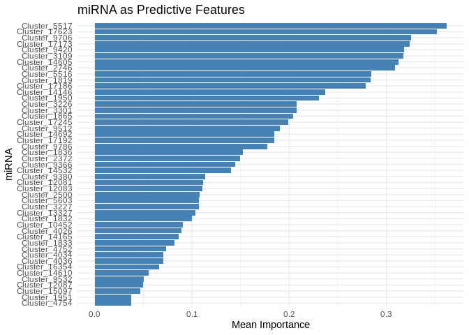

Now running model using miRNA as predictors, and specific sets of genes as response.
I used miRNA expression to predict expression of three different gene sets:
- host biomass (“Host_AFDW”):
- Genes contained in WGCNA modules significnatly correlated with host biomass.
- 793 genes (all retained through counts filtering)
- symbiont photosynthesis (“Am”)
- Genes contained within WGCNA modules significantly correlated with symbiont photosynthesis
- 5746 genes (all retained through counts filtering)
- List of GO terms provided by Steven (“ATP_production_GO”)
- Genes annotated with at least one of the four GO terms, related to ATP production
- 22 genes (all retained through counts filtering)
Note that the gene set of STP production GO terms contains two genes (FUN_014565, FUN031686) that are also present in the symbiont photosynthesis list.
Note that all gene sets were reduced to PCs before use.
Results
High model performance for all three sets.
Host biomass:

Symbiont photosynthesis:

ATP production GO terms:

A selection of miRNA are predictively important
We can also look at the predictive importance of individual miRNA. Summarizing across all three gene sets, we see the following (note: mean importance is min-max normalized to sit on same 0-1 scale):

A couple of interesting things pop out here!
First, most miRNA are contributing to model performance in all three gene sets. Generally speaking, host biomass has the most miRNA that are highly important to predicting gene expression (it has the most dark red bars). In contrast symbiont photosynthesis and ATP production have only a couple of miRNA that are highly important. For the ATP group this isn’t too surprising since the model includes only 22 genes. However, the photosynthesis gene set contains almost 6000 genes, so the limited number of important miRNA is really interesting!
There’s also interesting patterns of overlap. All of the miRNA important to predicting symbiont photosynthesis are also important to predicting host biomass Does this suggest these miRNA are involved in energy storage?
In contrast, the miRNA most important to predicting the ATP-production genes are of limited important to the photosynthesis and host biomass sets.
Notes/observations:
Rerunning the code without changes yields slightly different results each time, suggesting there’s a random component somewhere in the model training/prediction.
Look more into how this model works and how predictions/accuracy may vary
consider bootstrapping or something similar to account for variation
Think vst should be applied on all genes before isolating specific gene sets of interest, but should check with Ariana.
Code included below in case of file changes
Applying ML model using smaller, specific gene sets (e.g. genes significantly correlated with a phys metric, genes with a specific known function). Also adding in pOverA filtering
Inputs:
RNA counts matrix (raw):
../output/02.20-D-Apul-RNAseq-alignment-HiSat2/apul-gene_count_matrix.csvGene sets of interest:
../output/21-Apul-annotate-miRNA-mRNA-WGCNA/filtered-gene-sets/sRNA/miRNA counts matrix (raw):
../output/03.10-D-Apul-sRNAseq-expression-DESeq2/Apul_miRNA_ShortStack_counts_formatted.txtsample metadata:
../../M-multi-species/data/rna_metadata.csv
1 Load libraries
library(tidyverse)## ── Attaching core tidyverse packages ──────────────────────── tidyverse 2.0.0 ──
## ✔ dplyr 1.1.4 ✔ readr 2.1.5
## ✔ forcats 1.0.0 ✔ stringr 1.5.1
## ✔ ggplot2 3.5.1 ✔ tibble 3.2.1
## ✔ lubridate 1.9.4 ✔ tidyr 1.3.1
## ✔ purrr 1.0.2
## ── Conflicts ────────────────────────────────────────── tidyverse_conflicts() ──
## ✖ dplyr::filter() masks stats::filter()
## ✖ dplyr::lag() masks stats::lag()
## ℹ Use the conflicted package (<http://conflicted.r-lib.org/>) to force all conflicts to become errorslibrary(ggplot2)
library(DESeq2)## Loading required package: S4Vectors
## Loading required package: stats4
## Loading required package: BiocGenerics
##
## Attaching package: 'BiocGenerics'
##
## The following objects are masked from 'package:lubridate':
##
## intersect, setdiff, union
##
## The following objects are masked from 'package:dplyr':
##
## combine, intersect, setdiff, union
##
## The following objects are masked from 'package:stats':
##
## IQR, mad, sd, var, xtabs
##
## The following objects are masked from 'package:base':
##
## anyDuplicated, aperm, append, as.data.frame, basename, cbind,
## colnames, dirname, do.call, duplicated, eval, evalq, Filter, Find,
## get, grep, grepl, intersect, is.unsorted, lapply, Map, mapply,
## match, mget, order, paste, pmax, pmax.int, pmin, pmin.int,
## Position, rank, rbind, Reduce, rownames, sapply, setdiff, sort,
## table, tapply, union, unique, unsplit, which.max, which.min
##
##
## Attaching package: 'S4Vectors'
##
## The following objects are masked from 'package:lubridate':
##
## second, second<-
##
## The following objects are masked from 'package:dplyr':
##
## first, rename
##
## The following object is masked from 'package:tidyr':
##
## expand
##
## The following objects are masked from 'package:base':
##
## expand.grid, I, unname
##
## Loading required package: IRanges
##
## Attaching package: 'IRanges'
##
## The following object is masked from 'package:lubridate':
##
## %within%
##
## The following objects are masked from 'package:dplyr':
##
## collapse, desc, slice
##
## The following object is masked from 'package:purrr':
##
## reduce
##
## Loading required package: GenomicRanges
## Loading required package: GenomeInfoDb
## Loading required package: SummarizedExperiment
## Loading required package: MatrixGenerics
## Loading required package: matrixStats
##
## Attaching package: 'matrixStats'
##
## The following object is masked from 'package:dplyr':
##
## count
##
##
## Attaching package: 'MatrixGenerics'
##
## The following objects are masked from 'package:matrixStats':
##
## colAlls, colAnyNAs, colAnys, colAvgsPerRowSet, colCollapse,
## colCounts, colCummaxs, colCummins, colCumprods, colCumsums,
## colDiffs, colIQRDiffs, colIQRs, colLogSumExps, colMadDiffs,
## colMads, colMaxs, colMeans2, colMedians, colMins, colOrderStats,
## colProds, colQuantiles, colRanges, colRanks, colSdDiffs, colSds,
## colSums2, colTabulates, colVarDiffs, colVars, colWeightedMads,
## colWeightedMeans, colWeightedMedians, colWeightedSds,
## colWeightedVars, rowAlls, rowAnyNAs, rowAnys, rowAvgsPerColSet,
## rowCollapse, rowCounts, rowCummaxs, rowCummins, rowCumprods,
## rowCumsums, rowDiffs, rowIQRDiffs, rowIQRs, rowLogSumExps,
## rowMadDiffs, rowMads, rowMaxs, rowMeans2, rowMedians, rowMins,
## rowOrderStats, rowProds, rowQuantiles, rowRanges, rowRanks,
## rowSdDiffs, rowSds, rowSums2, rowTabulates, rowVarDiffs, rowVars,
## rowWeightedMads, rowWeightedMeans, rowWeightedMedians,
## rowWeightedSds, rowWeightedVars
##
## Loading required package: Biobase
## Welcome to Bioconductor
##
## Vignettes contain introductory material; view with
## 'browseVignettes()'. To cite Bioconductor, see
## 'citation("Biobase")', and for packages 'citation("pkgname")'.
##
##
## Attaching package: 'Biobase'
##
## The following object is masked from 'package:MatrixGenerics':
##
## rowMedians
##
## The following objects are masked from 'package:matrixStats':
##
## anyMissing, rowMedianslibrary(igraph)##
## Attaching package: 'igraph'
##
## The following object is masked from 'package:GenomicRanges':
##
## union
##
## The following object is masked from 'package:IRanges':
##
## union
##
## The following object is masked from 'package:S4Vectors':
##
## union
##
## The following objects are masked from 'package:BiocGenerics':
##
## normalize, path, union
##
## The following objects are masked from 'package:lubridate':
##
## %--%, union
##
## The following objects are masked from 'package:dplyr':
##
## as_data_frame, groups, union
##
## The following objects are masked from 'package:purrr':
##
## compose, simplify
##
## The following object is masked from 'package:tidyr':
##
## crossing
##
## The following object is masked from 'package:tibble':
##
## as_data_frame
##
## The following objects are masked from 'package:stats':
##
## decompose, spectrum
##
## The following object is masked from 'package:base':
##
## unionlibrary(psych)##
## Attaching package: 'psych'
##
## The following object is masked from 'package:SummarizedExperiment':
##
## distance
##
## The following object is masked from 'package:GenomicRanges':
##
## distance
##
## The following objects are masked from 'package:IRanges':
##
## distance, reflect
##
## The following objects are masked from 'package:ggplot2':
##
## %+%, alphalibrary(tidygraph)##
## Attaching package: 'tidygraph'
##
## The following object is masked from 'package:igraph':
##
## groups
##
## The following objects are masked from 'package:IRanges':
##
## active, slice
##
## The following objects are masked from 'package:S4Vectors':
##
## active, rename
##
## The following object is masked from 'package:stats':
##
## filterlibrary(ggraph)
library(WGCNA)## Loading required package: dynamicTreeCut
## Loading required package: fastcluster
##
## Attaching package: 'fastcluster'
##
## The following object is masked from 'package:stats':
##
## hclust
##
##
##
## Attaching package: 'WGCNA'
##
## The following object is masked from 'package:IRanges':
##
## cor
##
## The following object is masked from 'package:S4Vectors':
##
## cor
##
## The following object is masked from 'package:stats':
##
## corlibrary(edgeR)## Loading required package: limma
##
## Attaching package: 'limma'
##
## The following object is masked from 'package:DESeq2':
##
## plotMA
##
## The following object is masked from 'package:BiocGenerics':
##
## plotMAlibrary(reshape2)##
## Attaching package: 'reshape2'
##
## The following object is masked from 'package:tidyr':
##
## smithslibrary(ggcorrplot)
library(corrplot)## corrplot 0.94 loadedlibrary(rvest)##
## Attaching package: 'rvest'
##
## The following object is masked from 'package:readr':
##
## guess_encodinglibrary(purrr)
library(pheatmap)
library(glmnet)## Loading required package: Matrix
##
## Attaching package: 'Matrix'
##
## The following object is masked from 'package:S4Vectors':
##
## expand
##
## The following objects are masked from 'package:tidyr':
##
## expand, pack, unpack
##
## Loaded glmnet 4.1-8library(caret)## Loading required package: lattice
##
## Attaching package: 'caret'
##
## The following object is masked from 'package:purrr':
##
## liftlibrary(factoextra)## Welcome! Want to learn more? See two factoextra-related books at https://goo.gl/ve3WBalibrary(vegan)## Loading required package: permute
##
## Attaching package: 'permute'
##
## The following object is masked from 'package:igraph':
##
## permute
##
## This is vegan 2.6-8
##
## Attaching package: 'vegan'
##
## The following object is masked from 'package:caret':
##
## tolerance
##
## The following object is masked from 'package:psych':
##
## pca
##
## The following object is masked from 'package:igraph':
##
## diversitylibrary(ggfortify)
library(genefilter)##
## Attaching package: 'genefilter'
##
## The following object is masked from 'package:psych':
##
## AUC
##
## The following objects are masked from 'package:MatrixGenerics':
##
## rowSds, rowVars
##
## The following objects are masked from 'package:matrixStats':
##
## rowSds, rowVars
##
## The following object is masked from 'package:readr':
##
## speclibrary(scales)##
## Attaching package: 'scales'
##
## The following objects are masked from 'package:psych':
##
## alpha, rescale
##
## The following object is masked from 'package:purrr':
##
## discard
##
## The following object is masked from 'package:readr':
##
## col_factor2 Load and prep data
Load in count matrices for RNAseq.
# raw gene counts data (will filter and variance stabilize)
Apul_genes <- read_csv("../output/02.20-D-Apul-RNAseq-alignment-HiSat2/apul-gene_count_matrix.csv")## Rows: 44371 Columns: 41
## ── Column specification ────────────────────────────────────────────────────────
## Delimiter: ","
## chr (1): gene_id
## dbl (40): 1A1, 1A10, 1A12, 1A2, 1A8, 1A9, 1B1, 1B10, 1B2, 1B5, 1B9, 1C10, 1C...
##
## ℹ Use `spec()` to retrieve the full column specification for this data.
## ℹ Specify the column types or set `show_col_types = FALSE` to quiet this message.Apul_genes <- as.data.frame(Apul_genes)
# format gene IDs as rownames (instead of a column)
rownames(Apul_genes) <- Apul_genes$gene_id
Apul_genes <- Apul_genes%>%select(!gene_id)
# load and format metadata
metadata <- read_csv("../../M-multi-species/data/rna_metadata.csv")%>%select(AzentaSampleName, ColonyID, Timepoint) %>%
filter(grepl("ACR", ColonyID))## New names:
## Rows: 117 Columns: 19
## ── Column specification
## ──────────────────────────────────────────────────────── Delimiter: "," chr
## (13): SampleName, WellNumber, AzentaSampleName, ColonyID, Timepoint, Sam... dbl
## (5): SampleNumber, Plate, TotalAmount-ng, Volume-uL, Conc-ng.uL lgl (1):
## MethodUsedForSpectrophotometry
## ℹ Use `spec()` to retrieve the full column specification for this data. ℹ
## Specify the column types or set `show_col_types = FALSE` to quiet this message.
## • `` -> `...19`metadata$Sample <- paste(metadata$AzentaSampleName, metadata$ColonyID, metadata$Timepoint, sep = "_")
colonies <- unique(metadata$ColonyID)
# Rename gene column names to include full sample info (as in miRNA table)
colnames(Apul_genes) <- metadata$Sample[match(colnames(Apul_genes), metadata$AzentaSampleName)]
# raw miRNA counts (will filter and variance stabilize)
Apul_miRNA <- read.table(file = "../output/03.10-D-Apul-sRNAseq-expression-DESeq2/Apul_miRNA_ShortStack_counts_formatted.txt", header = TRUE, sep = "\t", check.names = FALSE)2.1 Counts filtering
Note: I’m filtering (removing unrepresented and lowly-represented genes) and variance stabilizing before I isolate specific gene sets. Not sure if the preliminary vst is appropriate though?
Ensure there are no genes or miRNAs with 0 counts across all samples.
nrow(Apul_genes)## [1] 44371Apul_genes_red<-Apul_genes %>%
mutate(Total = rowSums(.[, 1:40]))%>%
filter(!Total==0)%>%
dplyr::select(!Total)
nrow(Apul_genes_red)## [1] 35869# miRNAs
nrow(Apul_miRNA)## [1] 51Apul_miRNA_red<-Apul_miRNA %>%
mutate(Total = rowSums(.[, 1:40]))%>%
filter(!Total==0)%>%
dplyr::select(!Total)
nrow(Apul_miRNA_red)## [1] 51Removing genes with only 0 counts reduced number from 44371 to 35869. Retained all 51 miRNAs.
pOverA: Specifying the minimum count for a proportion of samples for each gene. Setting 3/38 = 0.08. This would retain genes that are only expressed in a single season in a couple of the colonies. Additionally, setting the minimum count so that the minimum number of samples must have a gene count above a certain threshold.
genes:
filt <- filterfun(pOverA(0.08, 5))
#create filter for the counts data
gfilt <- genefilter(Apul_genes_red, filt)
#identify genes to keep by count filter
gkeep <- Apul_genes_red[gfilt,]
#identify gene lists
gn.keep <- rownames(gkeep)
#gene count data filtered in PoverA, P percent of the samples have counts over A
Apul_genes_filt <- as.data.frame(Apul_genes_red[which(rownames(Apul_genes_red) %in% gn.keep),])
#How many rows do we have before and after filtering?
nrow(Apul_genes_red) #Before## [1] 35869nrow(Apul_genes_filt) #After## [1] 25730We had 35869 genes before, and 25730 genes after filtering.
miRNA:
mifilt <- filterfun(pOverA(0.08, 5))
#create filter for the counts data
mifilt <- genefilter(Apul_miRNA_red, mifilt)
#identify genes to keep by count filter
mikeep <- Apul_miRNA_red[mifilt,]
#identify genes to keep by count filter
mikeep <- Apul_miRNA_red[mifilt,]
#identify gene lists
mi.keep <- rownames(mikeep)
#gene count data filtered in PoverA, P percent of the samples have counts over A
Apul_miRNA_filt <- as.data.frame(Apul_miRNA_red[which(rownames(Apul_miRNA_red) %in% mi.keep),])
#How many rows do we have before and after filtering?
nrow(Apul_miRNA_red) #Before## [1] 51nrow(Apul_miRNA_filt) #After## [1] 47Of the 51 miRNA, 47 were retained. Which were removed?
setdiff(rownames(Apul_miRNA_red), rownames(Apul_miRNA_filt))## [1] "Cluster_5685" "Cluster_11565" "Cluster_13647" "Cluster_14633"2.2 Assign metadata and arrange order of columns
Order metadata the same as the column order in the gene matrix.
list<-colnames(Apul_genes_filt)
list<-as.factor(list)
metadata$Sample<-as.factor(metadata$Sample)
# Re-order the levels
metadata$Sample <- factor(as.character(metadata$Sample), levels=list)
# Re-order the data.frame
metadata_ordered <- metadata[order(metadata$Sample),]
metadata_ordered$Sample## [1] 1A1_ACR-173_TP1 1A10_ACR-145_TP4 1A12_ACR-237_TP3 1A2_ACR-244_TP4
## [5] 1A8_ACR-186_TP2 1A9_ACR-244_TP2 1B1_ACR-225_TP3 1B10_ACR-150_TP4
## [9] 1B2_ACR-173_TP3 1B5_ACR-229_TP1 1B9_ACR-265_TP4 1C10_ACR-173_TP4
## [13] 1C4_ACR-139_TP4 1D10_ACR-265_TP2 1D3_ACR-225_TP4 1D4_ACR-237_TP4
## [17] 1D6_ACR-229_TP2 1D8_ACR-237_TP2 1D9_ACR-229_TP4 1E1_ACR-265_TP3
## [21] 1E3_ACR-150_TP2 1E5_ACR-139_TP3 1E9_ACR-237_TP1 1F11_ACR-173_TP2
## [25] 1F4_ACR-150_TP3 1F8_ACR-145_TP3 1G5_ACR-244_TP3 1H11_ACR-225_TP1
## [29] 1H12_ACR-186_TP3 1H6_ACR-225_TP2 1H7_ACR-229_TP3 1H8_ACR-186_TP4
## [33] 2B2_ACR-145_TP1 2B3_ACR-139_TP2 2C1_ACR-244_TP1 2C2_ACR-139_TP1
## [37] 2D2_ACR-150_TP1 2E2_ACR-186_TP1 2F1_ACR-265_TP1 2G1_ACR-145_TP2
## 40 Levels: 1A1_ACR-173_TP1 1A10_ACR-145_TP4 ... 2G1_ACR-145_TP2# Make sure the miRNA colnames are also in the same order as the gene colnames
Apul_miRNA_filt <- Apul_miRNA_filt[, colnames(Apul_genes_filt)]Metadata and gene count matrix are now ordered the same.
2.3 Conduct variance stabilized transformation
VST should be performed on our two input datasets (gene counts and miRNA counts) separately
Genes:
#Set DESeq2 design
dds_genes <- DESeqDataSetFromMatrix(countData = Apul_genes_filt,
colData = metadata_ordered,
design = ~Timepoint+ColonyID)## converting counts to integer mode
## Warning in DESeqDataSet(se, design = design, ignoreRank): some variables in
## design formula are characters, converting to factors
## Note: levels of factors in the design contain characters other than
## letters, numbers, '_' and '.'. It is recommended (but not required) to use
## only letters, numbers, and delimiters '_' or '.', as these are safe characters
## for column names in R. [This is a message, not a warning or an error]Check size factors.
SF.dds_genes <- estimateSizeFactors(dds_genes) #estimate size factors to determine if we can use vst to transform our data. Size factors should be less than 4 for us to use vst## Note: levels of factors in the design contain characters other than
## letters, numbers, '_' and '.'. It is recommended (but not required) to use
## only letters, numbers, and delimiters '_' or '.', as these are safe characters
## for column names in R. [This is a message, not a warning or an error]print(sizeFactors(SF.dds_genes)) #View size factors## 1A1_ACR-173_TP1 1A10_ACR-145_TP4 1A12_ACR-237_TP3 1A2_ACR-244_TP4
## 0.7568558 0.7687730 1.4234818 0.6420081
## 1A8_ACR-186_TP2 1A9_ACR-244_TP2 1B1_ACR-225_TP3 1B10_ACR-150_TP4
## 1.1213916 1.2061267 1.4198168 1.4021990
## 1B2_ACR-173_TP3 1B5_ACR-229_TP1 1B9_ACR-265_TP4 1C10_ACR-173_TP4
## 1.0388656 1.6077879 0.9862597 0.7148431
## 1C4_ACR-139_TP4 1D10_ACR-265_TP2 1D3_ACR-225_TP4 1D4_ACR-237_TP4
## 1.1895625 1.1390590 0.6730531 1.0550212
## 1D6_ACR-229_TP2 1D8_ACR-237_TP2 1D9_ACR-229_TP4 1E1_ACR-265_TP3
## 1.0931378 0.8705408 0.6710741 1.0715773
## 1E3_ACR-150_TP2 1E5_ACR-139_TP3 1E9_ACR-237_TP1 1F11_ACR-173_TP2
## 1.1807769 1.2228114 1.0417935 1.0435593
## 1F4_ACR-150_TP3 1F8_ACR-145_TP3 1G5_ACR-244_TP3 1H11_ACR-225_TP1
## 1.3998258 0.7956019 1.6096974 1.4234818
## 1H12_ACR-186_TP3 1H6_ACR-225_TP2 1H7_ACR-229_TP3 1H8_ACR-186_TP4
## 0.6119729 0.7956019 1.3289120 1.2201768
## 2B2_ACR-145_TP1 2B3_ACR-139_TP2 2C1_ACR-244_TP1 2C2_ACR-139_TP1
## 1.1042385 1.4406114 0.6651642 1.1926753
## 2D2_ACR-150_TP1 2E2_ACR-186_TP1 2F1_ACR-265_TP1 2G1_ACR-145_TP2
## 0.7835924 0.6245044 0.9581634 0.8213095all(sizeFactors(SF.dds_genes)) < 4## Warning in all(sizeFactors(SF.dds_genes)): coercing argument of type 'double'
## to logical
## [1] TRUEAll size factors are less than 4, so we can use VST transformation.
vsd_genes <- vst(dds_genes, blind=TRUE) #apply a variance stabilizing transformation to minimize effects of small counts and normalize with respect to library size
vsd_genes <- assay(vsd_genes)
head(vsd_genes, 3) #view transformed gene count data for the first three genes in the dataset. ## 1A1_ACR-173_TP1 1A10_ACR-145_TP4 1A12_ACR-237_TP3 1A2_ACR-244_TP4
## FUN_002326 6.381927 6.314605 5.963893 5.647868
## FUN_002303 7.272815 6.789218 6.385965 5.817225
## FUN_002304 6.611599 5.502055 5.752904 5.527221
## 1A8_ACR-186_TP2 1A9_ACR-244_TP2 1B1_ACR-225_TP3 1B10_ACR-150_TP4
## FUN_002326 5.547668 5.536500 5.989895 5.915797
## FUN_002303 5.617732 5.660921 6.387376 6.245288
## FUN_002304 5.456087 5.448168 5.575266 5.514644
## 1B2_ACR-173_TP3 1B5_ACR-229_TP1 1B9_ACR-265_TP4 1C10_ACR-173_TP4
## FUN_002326 6.380263 5.419572 5.937605 6.320872
## FUN_002303 6.996842 5.554799 6.270729 6.801444
## FUN_002304 5.693721 5.234250 5.470765 5.909332
## 1C4_ACR-139_TP4 1D10_ACR-265_TP2 1D3_ACR-225_TP4 1D4_ACR-237_TP4
## FUN_002326 5.538589 5.889583 6.168475 6.284689
## FUN_002303 5.942188 6.331095 6.447554 6.705413
## FUN_002304 5.606644 5.545237 5.520407 5.557336
## 1D6_ACR-229_TP2 1D8_ACR-237_TP2 1D9_ACR-229_TP4 1E1_ACR-265_TP3
## FUN_002326 5.458930 6.128558 5.520828 5.787281
## FUN_002303 5.551676 6.587336 5.234250 6.230238
## FUN_002304 5.458930 5.735774 5.234250 5.626491
## 1E3_ACR-150_TP2 1E5_ACR-139_TP3 1E9_ACR-237_TP1 1F11_ACR-173_TP2
## FUN_002326 5.539715 5.601574 6.167772 5.838837
## FUN_002303 5.761383 5.867108 6.602561 6.243007
## FUN_002304 5.450448 5.446706 5.559372 5.794565
## 1F4_ACR-150_TP3 1F8_ACR-145_TP3 1G5_ACR-244_TP3 1H11_ACR-225_TP1
## FUN_002326 5.916364 6.015555 5.496001 5.963893
## FUN_002303 6.510569 6.409577 5.816389 6.385965
## FUN_002304 5.916364 5.497514 5.496001 5.752904
## 1H12_ACR-186_TP3 1H6_ACR-225_TP2 1H7_ACR-229_TP3 1H8_ACR-186_TP4
## FUN_002326 5.657826 6.015555 5.438063 5.534761
## FUN_002303 5.752103 6.409577 5.438063 5.793954
## FUN_002304 5.234250 5.497514 5.438063 5.446935
## 2B2_ACR-145_TP1 2B3_ACR-139_TP2 2C1_ACR-244_TP1 2C2_ACR-139_TP1
## FUN_002326 5.968475 5.572807 5.640653 5.606161
## FUN_002303 6.367643 5.711957 5.731177 5.908979
## FUN_002304 5.550083 5.430015 5.522094 5.538193
## 2D2_ACR-150_TP1 2E2_ACR-186_TP1 2F1_ACR-265_TP1 2G1_ACR-145_TP2
## FUN_002326 6.519530 5.653585 6.259654 5.810603
## FUN_002303 6.813192 5.653585 6.639302 6.391978
## FUN_002304 6.021376 5.531284 5.474200 5.681868miRNA:
#Set DESeq2 design
dds_miRNA <- DESeqDataSetFromMatrix(countData = Apul_miRNA_filt,
colData = metadata_ordered,
design = ~Timepoint+ColonyID)## Warning in DESeqDataSet(se, design = design, ignoreRank): some variables in
## design formula are characters, converting to factors
## Note: levels of factors in the design contain characters other than
## letters, numbers, '_' and '.'. It is recommended (but not required) to use
## only letters, numbers, and delimiters '_' or '.', as these are safe characters
## for column names in R. [This is a message, not a warning or an error]Check size factors.
SF.dds_miRNA <- estimateSizeFactors(dds_miRNA) #estimate size factors to determine if we can use vst to transform our data. Size factors should be less than 4 for us to use vst## Note: levels of factors in the design contain characters other than
## letters, numbers, '_' and '.'. It is recommended (but not required) to use
## only letters, numbers, and delimiters '_' or '.', as these are safe characters
## for column names in R. [This is a message, not a warning or an error]print(sizeFactors(SF.dds_miRNA)) #View size factors## 1A1_ACR-173_TP1 1A10_ACR-145_TP4 1A12_ACR-237_TP3 1A2_ACR-244_TP4
## 1.4663620 0.5013837 1.1375801 1.4285229
## 1A8_ACR-186_TP2 1A9_ACR-244_TP2 1B1_ACR-225_TP3 1B10_ACR-150_TP4
## 1.4848190 3.6543406 0.6428434 0.6090123
## 1B2_ACR-173_TP3 1B5_ACR-229_TP1 1B9_ACR-265_TP4 1C10_ACR-173_TP4
## 0.8904346 3.5848052 0.5041214 0.3523615
## 1C4_ACR-139_TP4 1D10_ACR-265_TP2 1D3_ACR-225_TP4 1D4_ACR-237_TP4
## 0.2687172 1.7352574 3.3952218 1.7342028
## 1D6_ACR-229_TP2 1D8_ACR-237_TP2 1D9_ACR-229_TP4 1E1_ACR-265_TP3
## 3.1325088 1.6420440 1.6784438 0.4768304
## 1E3_ACR-150_TP2 1E5_ACR-139_TP3 1E9_ACR-237_TP1 1F11_ACR-173_TP2
## 2.5657486 0.1036718 0.8991829 1.4685414
## 1F4_ACR-150_TP3 1F8_ACR-145_TP3 1G5_ACR-244_TP3 1H11_ACR-225_TP1
## 1.9455453 0.4071314 2.2838388 0.8196170
## 1H12_ACR-186_TP3 1H6_ACR-225_TP2 1H7_ACR-229_TP3 1H8_ACR-186_TP4
## 0.4730390 1.9006672 1.1185865 0.8466327
## 2B2_ACR-145_TP1 2B3_ACR-139_TP2 2C1_ACR-244_TP1 2C2_ACR-139_TP1
## 0.9294126 1.8998015 1.2208764 1.4280205
## 2D2_ACR-150_TP1 2E2_ACR-186_TP1 2F1_ACR-265_TP1 2G1_ACR-145_TP2
## 0.5326906 0.3152060 0.3054304 1.9176071all(sizeFactors(SF.dds_miRNA)) < 4## Warning in all(sizeFactors(SF.dds_miRNA)): coercing argument of type 'double'
## to logical
## [1] TRUEAll size factors are less than 4, so we can use VST transformation.
vsd_miRNA <- varianceStabilizingTransformation(dds_miRNA, blind=TRUE) #apply a variance stabilizing transformation to minimize effects of small counts and normalize with respect to library size. Using varianceStabilizingTransformation() instead of vst() because few input genes## Note: levels of factors in the design contain characters other than
## letters, numbers, '_' and '.'. It is recommended (but not required) to use
## only letters, numbers, and delimiters '_' or '.', as these are safe characters
## for column names in R. [This is a message, not a warning or an error]vsd_miRNA <- assay(vsd_miRNA)
head(vsd_miRNA, 3) #view transformed gene count data for the first three genes in the dataset.## 1A1_ACR-173_TP1 1A10_ACR-145_TP4 1A12_ACR-237_TP3 1A2_ACR-244_TP4
## Cluster_1819 6.238826 6.317673 5.193726 5.902841
## Cluster_1832 10.289253 9.353757 8.601591 9.385848
## Cluster_1833 5.048031 5.238450 5.689758 4.740887
## 1A8_ACR-186_TP2 1A9_ACR-244_TP2 1B1_ACR-225_TP3 1B10_ACR-150_TP4
## Cluster_1819 5.965996 6.629812 5.144832 4.845529
## Cluster_1832 9.713980 9.231169 9.827051 8.514351
## Cluster_1833 3.187374 1.605181 5.581722 3.938572
## 1B2_ACR-173_TP3 1B5_ACR-229_TP1 1B9_ACR-265_TP4 1C10_ACR-173_TP4
## Cluster_1819 5.533393 5.973709 5.794654 5.833047
## Cluster_1832 9.277000 9.958107 8.808700 9.394462
## Cluster_1833 5.305314 5.533981 4.125680 3.800581
## 1C4_ACR-139_TP4 1D10_ACR-265_TP2 1D3_ACR-225_TP4 1D4_ACR-237_TP4
## Cluster_1819 5.429070 5.936798 4.652820 4.878331
## Cluster_1832 9.628054 8.500652 9.747072 9.154859
## Cluster_1833 5.762673 1.605181 4.903375 5.910117
## 1D6_ACR-229_TP2 1D8_ACR-237_TP2 1D9_ACR-229_TP4 1E1_ACR-265_TP3
## Cluster_1819 6.091687 5.787796 5.498316 5.515029
## Cluster_1832 9.831971 8.639755 9.366864 9.133968
## Cluster_1833 3.911358 5.342319 3.643082 5.642128
## 1E3_ACR-150_TP2 1E5_ACR-139_TP3 1E9_ACR-237_TP1 1F11_ACR-173_TP2
## Cluster_1819 6.227797 4.644213 4.747952 6.041496
## Cluster_1832 9.030323 8.781771 8.350263 10.030506
## Cluster_1833 1.605181 1.605181 4.747952 4.459880
## 1F4_ACR-150_TP3 1F8_ACR-145_TP3 1G5_ACR-244_TP3 1H11_ACR-225_TP1
## Cluster_1819 5.112737 5.964150 5.569442 4.792447
## Cluster_1832 8.626276 9.054458 10.240496 9.551367
## Cluster_1833 3.516495 4.515605 1.605181 4.915503
## 1H12_ACR-186_TP3 1H6_ACR-225_TP2 1H7_ACR-229_TP3 1H8_ACR-186_TP4
## Cluster_1819 6.242681 4.931185 5.661095 5.282405
## Cluster_1832 9.867459 9.826331 9.503289 10.018506
## Cluster_1833 4.858957 4.684693 3.936790 5.795099
## 2B2_ACR-145_TP1 2B3_ACR-139_TP2 2C1_ACR-244_TP1 2C2_ACR-139_TP1
## Cluster_1819 5.734780 5.380442 5.716894 5.353031
## Cluster_1832 7.998131 9.872251 9.347640 9.619989
## Cluster_1833 1.605181 3.901090 5.623762 4.490532
## 2D2_ACR-150_TP1 2E2_ACR-186_TP1 2F1_ACR-265_TP1 2G1_ACR-145_TP2
## Cluster_1819 5.560357 6.359532 5.865697 5.254525
## Cluster_1832 8.110494 9.399757 9.144490 9.088095
## Cluster_1833 3.686480 1.605181 1.605181 4.299740vsd_genes <- as.data.frame(t(vsd_genes))
vsd_miRNA <- as.data.frame(t(vsd_miRNA))2.4 Islolate gene sets
Read in gene set tables
# genes from WGCNA modules significantly correlated with host biomass
Host_AFDW <- read.table("../output/21-Apul-annotate-miRNA-mRNA-WGCNA/filtered-gene-sets/Host_AFDW.mg.cm2_gene_counts.tab", sep="\t", header=TRUE)
# genes from WGCNA modules significantly correlated with symbiont photosynthesis
Am <- read.table("../output/21-Apul-annotate-miRNA-mRNA-WGCNA/filtered-gene-sets/Am_gene_counts.tab", sep="\t", header=TRUE)
# GO temrs related to energy production
ATP_production_GO <- read.table("../output/21-Apul-annotate-miRNA-mRNA-WGCNA/filtered-gene-sets/ATP_production_GO_terms_gene_counts.tab", sep="\t", header=TRUE)Isolate filtered counts by gene set
vsd_Host_AFDW <- vsd_genes[, colnames(vsd_genes) %in% Host_AFDW$gene_id]
vsd_Am <- vsd_genes[, colnames(vsd_genes) %in% Am$gene_id]
vsd_ATP_production_GO <- vsd_genes[, colnames(vsd_genes) %in% ATP_production_GO$gene_id]3 Feature selection
For gene sets that are large we’ll need to reduce dimensionality using PCA. Note that the # of miRNA (47 after filtering) is low enough that reduction isn’t necessary.
3.1 Host_AFDW
Reduce dimensionality
# Perform PCA on gene+miRNA expression matrix
pca_Host_AFDW <- prcomp(vsd_Host_AFDW, scale. = TRUE)
# Select top PCs that explain most variance (e.g., top 50 PCs)
explained_var_Host_AFDW <- summary(pca_Host_AFDW)$importance[2, ] # Cumulative variance explained
num_pcs_Host_AFDW <- min(which(cumsum(explained_var_Host_AFDW) > 0.95)) # Keep PCs that explain 95% cumulative variance
Host_AFDW_pcs <- as.data.frame(pca_Host_AFDW$x[, 1:num_pcs_Host_AFDW]) # Extract selected PCs
dim(Host_AFDW_pcs)## [1] 40 2929 PCs summarize 95% of the explained variance in genes associated with host biomass (Host AFDW)
3.2 Am
Reduce dimensionality
# Perform PCA on gene+miRNA expression matrix
pca_Am <- prcomp(vsd_Am, scale. = TRUE)
# Select top PCs that explain most variance (e.g., top 50 PCs)
explained_var_Am <- summary(pca_Am)$importance[2, ] # Cumulative variance explained
num_pcs_Am <- min(which(cumsum(explained_var_Am) > 0.95)) # Keep PCs that explain 95% cumulative variance
Am_pcs <- as.data.frame(pca_Am$x[, 1:num_pcs_Am]) # Extract selected PCs
dim(Am_pcs)## [1] 40 3030 PCs summarize 95% of the explained variance in genes associated with symbiont photosynthesis (Am)
3.3 Am
Reduce dimensionality
# Perform PCA on gene+miRNA expression matrix
pca_ATP_prod_GO <- prcomp(vsd_ATP_production_GO, scale. = TRUE)
# Select top PCs that explain most variance (e.g., top 50 PCs)
explained_var_ATP_prod_GO <- summary(pca_ATP_prod_GO)$importance[2, ] # Cumulative variance explained
num_pcs_ATP_prod_GO <- min(which(cumsum(explained_var_ATP_prod_GO) > 0.95)) # Keep PCs that explain 95% cumulative variance
ATP_prod_GO_pcs <- as.data.frame(pca_ATP_prod_GO$x[, 1:num_pcs_ATP_prod_GO]) # Extract selected PCs
dim(ATP_prod_GO_pcs)## [1] 40 1111 PCs summarize 95% of the explained variance in genes associated with symbiont photosynthesis (Am)
4 Host biomass (Host_AFDW)
4.1 The model
Train elastic models to predict gene expression PCs from miRNA expression.
train_models <- function(response_pcs, predictor_pcs) {
models <- list()
for (pc in colnames(response_pcs)) {
y <- response_pcs[[pc]] # Gene expression PC
X <- as.matrix(predictor_pcs) # miRNA expression as predictors
# Train elastic net model (alpha = 0.5 for mix of LASSO & Ridge)
model <- cv.glmnet(X, y, alpha = 0.5)
models[[pc]] <- model
}
return(models)
}
# Train models predicting gene expression PCs from miRNA expression
models_Host_AFDW <- train_models(Host_AFDW_pcs, vsd_miRNA)Extract feature importance.
get_feature_importance <- function(models) {
importance_list <- lapply(models, function(model) {
coefs <- as.matrix(coef(model, s = "lambda.min"))[-1, , drop = FALSE] # Convert to regular matrix & remove intercept
# Convert to data frame
coefs_df <- data.frame(Feature = rownames(coefs), Importance = as.numeric(coefs))
return(coefs_df)
})
# Combine feature importance across all predicted gene PCs
importance_df <- bind_rows(importance_list) %>%
group_by(Feature) %>%
summarize(MeanImportance = mean(abs(Importance)), .groups = "drop") %>%
arrange(desc(MeanImportance))
return(importance_df)
}
feature_importance_Host_AFDW <- get_feature_importance(models_Host_AFDW)
head(feature_importance_Host_AFDW, 20) # Top predictive miRNA## # A tibble: 20 × 2
## Feature MeanImportance
## <chr> <dbl>
## 1 Cluster_5517 0.362
## 2 Cluster_17623 0.352
## 3 Cluster_9706 0.325
## 4 Cluster_17173 0.324
## 5 Cluster_9420 0.318
## 6 Cluster_3109 0.317
## 7 Cluster_14605 0.312
## 8 Cluster_2746 0.309
## 9 Cluster_5516 0.284
## 10 Cluster_1819 0.284
## 11 Cluster_17186 0.279
## 12 Cluster_14146 0.237
## 13 Cluster_1950 0.230
## 14 Cluster_3226 0.208
## 15 Cluster_3301 0.207
## 16 Cluster_1865 0.204
## 17 Cluster_17245 0.199
## 18 Cluster_9512 0.190
## 19 Cluster_14692 0.185
## 20 Cluster_17192 0.184Evaluate performance.
evaluate_model_performance <- function(models, response_pcs, predictor_pcs) {
results <- data.frame(PC = colnames(response_pcs), R2 = NA)
for (pc in colnames(response_pcs)) {
y <- response_pcs[[pc]]
X <- as.matrix(predictor_pcs)
model <- models[[pc]]
preds <- predict(model, X, s = "lambda.min")
R2 <- cor(y, preds)^2 # R-squared metric
results[results$PC == pc, "R2"] <- R2
}
return(results)
}
# Function with error warnings:
# evaluate_model_performance <- function(models, response_pcs, predictor_pcs) {
# results <- data.frame(PC = colnames(response_pcs), R2 = NA)
#
# for (pc in colnames(response_pcs)) {
# cat("Processing:", pc, "\n")
#
# y <- response_pcs[[pc]]
# X <- as.matrix(predictor_pcs)
#
# if (!(pc %in% names(models))) {
# cat("Model missing for PC:", pc, "\n")
# next
# }
#
# model <- models[[pc]]
# preds <- predict(model, X, s = "lambda.min")
#
# if (any(is.na(preds))) {
# cat("NA in predictions for PC:", pc, "\n")
# }
#
# if (var(y) == 0) {
# cat("Zero variance in y for PC:", pc, "\n")
# next
# }
#
# R2 <- cor(y, preds)^2
# results[results$PC == pc, "R2"] <- R2
# }
#
# return(results)
# }
performance_results_Host_AFDW <- evaluate_model_performance(models_Host_AFDW, Host_AFDW_pcs, vsd_miRNA)
summary(performance_results_Host_AFDW$R2)## Min. 1st Qu. Median Mean 3rd Qu. Max. NA's
## 0.1751 0.4099 0.7795 0.6614 0.8911 0.9503 154.2 Results
Plot results.
# Select top predictive features
# few enough miRNA that we can show all
top_features_Host_AFDW <- feature_importance_Host_AFDW %>% top_n(50, MeanImportance)
# Plot
ggplot(top_features_Host_AFDW, aes(x = reorder(Feature, MeanImportance), y = MeanImportance)) +
geom_bar(stat = "identity", fill = "steelblue") +
coord_flip() + # Flip for readability
theme_minimal() +
labs(title = "miRNA as Predictive Features",
x = "miRNA",
y = "Mean Importance")
ggplot(performance_results_Host_AFDW, aes(x = as.factor(PC), y = R2)) +
geom_point(color = "darkred", size = 3) +
geom_hline(yintercept = mean(performance_results_Host_AFDW$R2, na.rm = TRUE), linetype = "dashed", color = "blue") +
theme_minimal() +
labs(title = "Model Performance Across Gene Expression PCs",
x = "Gene Expression PC",
y = "R² (Variance Explained)") +
theme(axis.text.x = element_text(angle = 45, hjust = 1)) # Rotate labels## Warning: Removed 15 rows containing missing values or values outside the scale range
## (`geom_point()`).View components associated with gene PCs
# Get the PCA rotation (loadings) matrix from the original gene PCA
loadings_Host_AFDW <- pca_Host_AFDW$rotation # Each column corresponds to a PC
# Convert to data frame and reshape for plotting
loadings_Host_AFDW_df <- as.data.frame(loadings_Host_AFDW) %>%
rownames_to_column(var = "gene") %>%
pivot_longer(-gene, names_to = "Host_AFDW_PC", values_to = "Loading")
# View top CpGs contributing most to each PC
top_genes_Host_AFDW <- loadings_Host_AFDW_df %>%
group_by(Host_AFDW_PC) %>%
arrange(desc(abs(Loading))) %>%
slice_head(n = 20) # Select top 10 CpGs per PC
print(top_genes_Host_AFDW)## # A tibble: 800 × 3
## # Groups: Host_AFDW_PC [40]
## gene Host_AFDW_PC Loading
## <chr> <chr> <dbl>
## 1 FUN_010504 PC1 -0.0593
## 2 FUN_033160 PC1 -0.0587
## 3 FUN_042402 PC1 -0.0580
## 4 FUN_026248 PC1 -0.0579
## 5 FUN_010505 PC1 -0.0578
## 6 FUN_030089 PC1 -0.0576
## 7 FUN_027385 PC1 -0.0575
## 8 FUN_013949 PC1 -0.0573
## 9 FUN_008069 PC1 -0.0572
## 10 FUN_036450 PC1 -0.0570
## # ℹ 790 more rowsView predicted vs actual gene expression values to evaluate model.
# Choose a gene expression PC to visualize (e.g., the most predictable one)
best_pc_Host_AFDW <- performance_results_Host_AFDW$PC[which.max(performance_results_Host_AFDW$R2)]
# Extract actual and predicted values for that PC
actual_values_Host_AFDW <- Host_AFDW_pcs[[best_pc_Host_AFDW]]
predicted_values_Host_AFDW <- predict(models_Host_AFDW[[best_pc_Host_AFDW]], as.matrix(vsd_miRNA), s = "lambda.min")
# Create data frame
prediction_df_Host_AFDW <- data.frame(
Actual = actual_values_Host_AFDW,
Predicted = predicted_values_Host_AFDW
)
# Scatter plot with regression line
ggplot(prediction_df_Host_AFDW, aes(x = Actual, y = lambda.min)) +
geom_point(color = "blue", alpha = 0.7) +
geom_smooth(method = "lm", color = "red", se = FALSE) +
theme_minimal() +
labs(title = paste("Predicted vs. Actual for", best_pc_Host_AFDW),
x = "Actual Gene Expression PC",
y = "Predicted Gene Expression PC") +
annotate("text", x = min(actual_values_Host_AFDW), y = max(predicted_values_Host_AFDW),
label = paste("R² =", round(max(performance_results_Host_AFDW$R2, na.rm=TRUE), 3)),
hjust = 0, color = "black", size = 5)## `geom_smooth()` using formula = 'y ~ x'## `geom_smooth()` using formula = 'y ~ x'View top 20 genes associated with the PC with the highest R^2
print(top_genes_Host_AFDW%>%filter(Host_AFDW_PC==best_pc_Host_AFDW))## # A tibble: 20 × 3
## # Groups: Host_AFDW_PC [1]
## gene Host_AFDW_PC Loading
## <chr> <chr> <dbl>
## 1 FUN_010504 PC1 -0.0593
## 2 FUN_033160 PC1 -0.0587
## 3 FUN_042402 PC1 -0.0580
## 4 FUN_026248 PC1 -0.0579
## 5 FUN_010505 PC1 -0.0578
## 6 FUN_030089 PC1 -0.0576
## 7 FUN_027385 PC1 -0.0575
## 8 FUN_013949 PC1 -0.0573
## 9 FUN_008069 PC1 -0.0572
## 10 FUN_036450 PC1 -0.0570
## 11 FUN_025551 PC1 -0.0569
## 12 FUN_027383 PC1 -0.0567
## 13 FUN_035483 PC1 -0.0566
## 14 FUN_040002 PC1 -0.0563
## 15 FUN_031375 PC1 -0.0558
## 16 FUN_040401 PC1 -0.0558
## 17 FUN_032914 PC1 -0.0557
## 18 FUN_032541 PC1 -0.0555
## 19 FUN_027486 PC1 -0.0555
## 20 FUN_033529 PC1 -0.0552Plot performance for all PCs
# Select all PCs with R^2 values above 0.75
all_pcs_Host_AFDW <- performance_results_Host_AFDW %>% filter(R2 > 0.75) %>% pull(PC)
for (pc in all_pcs_Host_AFDW) {
# Extract actual and predicted values for that PC
actual_values <- Host_AFDW_pcs[[pc]]
predicted_values <- predict(models_Host_AFDW[[pc]], as.matrix(vsd_miRNA), s = "lambda.min")
# Create data frame
prediction_df <- data.frame(
Actual = actual_values,
Predicted = predicted_values
)
# Scatter plot with regression line
plot <- ggplot(prediction_df, aes(x = Actual, y = lambda.min)) +
geom_point(color = "blue", alpha = 0.7) +
geom_smooth(method = "lm", color = "red", se = FALSE) +
theme_minimal() +
labs(title = paste("Predicted vs. Actual for", pc),
x = "Actual Gene Expression PC",
y = "Predicted Gene Expression PC") +
annotate("text", x = min(actual_values), y = max(predicted_values),
label = paste("R² =", round(max(performance_results_Host_AFDW[performance_results_Host_AFDW$PC==pc,2], na.rm=TRUE), 3)),
hjust = 0, color = "black", size = 5)
print(plot)
}## `geom_smooth()` using formula = 'y ~ x'
## `geom_smooth()` using formula = 'y ~ x'## `geom_smooth()` using formula = 'y ~ x'## `geom_smooth()` using formula = 'y ~ x'## `geom_smooth()` using formula = 'y ~ x'## `geom_smooth()` using formula = 'y ~ x'## `geom_smooth()` using formula = 'y ~ x'## `geom_smooth()` using formula = 'y ~ x'We can also look at which miRNA(s) contributed most to predicting gene PCs of interest
get_feature_importance_for_pc <- function(model) {
coefs <- as.matrix(coef(model, s = "lambda.min"))[-1, , drop = FALSE] # Remove intercept
coefs_df <- data.frame(Feature = rownames(coefs), Importance = abs(as.numeric(coefs)))
return(coefs_df %>% arrange(desc(Importance))) # Sort by importance
}
for (pc in all_pcs_Host_AFDW) {
# Extract feature importance for the most predictable PC
best_pc_model <- models_Host_AFDW[[pc]]
best_pc_importance <- get_feature_importance_for_pc(best_pc_model)
# Plot top most important miRNA for predicting this PC
plot <- ggplot(best_pc_importance %>% head(20), aes(x = reorder(Feature, Importance), y = Importance)) +
geom_bar(stat = "identity", fill = "steelblue") +
coord_flip() +
theme_minimal() +
labs(title = paste("Top miRNA Predictors for", pc),
x = "miRNA",
y = "Importance Score")
print(plot)
}5 Symbiont photsynthesis (Am)
5.1 The model
Train elastic models to predict gene expression PCs from miRNA expression
# Train models predicting gene expression PCs from miRNA expression
models_Am <- train_models(Am_pcs, vsd_miRNA)Extract feature importance.
feature_importance_Am <- get_feature_importance(models_Am)
head(feature_importance_Am, 20) # Top predictive miRNA## # A tibble: 20 × 2
## Feature MeanImportance
## <chr> <dbl>
## 1 Cluster_17173 1.20
## 2 Cluster_5516 0.969
## 3 Cluster_9706 0.848
## 4 Cluster_9420 0.785
## 5 Cluster_4752 0.688
## 6 Cluster_14146 0.570
## 7 Cluster_4036 0.555
## 8 Cluster_5517 0.534
## 9 Cluster_1865 0.523
## 10 Cluster_9786 0.522
## 11 Cluster_2372 0.515
## 12 Cluster_17245 0.505
## 13 Cluster_1836 0.484
## 14 Cluster_17623 0.480
## 15 Cluster_17186 0.462
## 16 Cluster_1819 0.430
## 17 Cluster_4026 0.410
## 18 Cluster_16354 0.403
## 19 Cluster_10452 0.403
## 20 Cluster_5603 0.385Evaluate performance.
performance_results_Am <- evaluate_model_performance(models_Am, Am_pcs, vsd_miRNA)
summary(performance_results_Am$R2)## Min. 1st Qu. Median Mean 3rd Qu. Max. NA's
## 0.2014 0.5638 0.6729 0.6452 0.8223 0.9250 165.2 Results
Plot results.
# Select top predictive features
# few enough miRNA that we can show all
top_features_Am <- feature_importance_Am %>% top_n(50, MeanImportance)
# Plot
ggplot(top_features_Am, aes(x = reorder(Feature, MeanImportance), y = MeanImportance)) +
geom_bar(stat = "identity", fill = "steelblue") +
coord_flip() + # Flip for readability
theme_minimal() +
labs(title = "miRNA as Predictive Features",
x = "miRNA",
y = "Mean Importance")ggplot(performance_results_Am, aes(x = as.factor(PC), y = R2)) +
geom_point(color = "darkred", size = 3) +
geom_hline(yintercept = mean(performance_results_Am$R2, na.rm = TRUE), linetype = "dashed", color = "blue") +
theme_minimal() +
labs(title = "Model Performance Across Gene Expression PCs",
x = "Gene Expression PC",
y = "R² (Variance Explained)") +
theme(axis.text.x = element_text(angle = 45, hjust = 1)) # Rotate labels## Warning: Removed 16 rows containing missing values or values outside the scale range
## (`geom_point()`).View components associated with gene PCs
# Get the PCA rotation (loadings) matrix from the original gene PCA
loadings_Am <- pca_Am$rotation # Each column corresponds to a PC
# Convert to data frame and reshape for plotting
loadings_Am_df <- as.data.frame(loadings_Am) %>%
rownames_to_column(var = "gene") %>%
pivot_longer(-gene, names_to = "Am_PC", values_to = "Loading")
# View top CpGs contributing most to each PC
top_genes_Am <- loadings_Am_df %>%
group_by(Am_PC) %>%
arrange(desc(abs(Loading))) %>%
slice_head(n = 20) # Select top 10 CpGs per PC
print(top_genes_Am)## # A tibble: 800 × 3
## # Groups: Am_PC [40]
## gene Am_PC Loading
## <chr> <chr> <dbl>
## 1 FUN_011681 PC1 -0.0250
## 2 FUN_040949 PC1 0.0244
## 3 FUN_027962 PC1 0.0244
## 4 FUN_023373 PC1 0.0244
## 5 FUN_000239 PC1 0.0244
## 6 FUN_014926 PC1 0.0241
## 7 FUN_001784 PC1 -0.0240
## 8 FUN_016798 PC1 -0.0239
## 9 FUN_023033 PC1 -0.0239
## 10 FUN_016083 PC1 -0.0238
## # ℹ 790 more rowsView predicted vs actual gene expression values to evaluate model.
# Choose a gene expression PC to visualize (e.g., the most predictable one)
best_pc_Am <- performance_results_Am$PC[which.max(performance_results_Am$R2)]
# Extract actual and predicted values for that PC
actual_values_Am <- Am_pcs[[best_pc_Am]]
predicted_values_Am <- predict(models_Am[[best_pc_Am]], as.matrix(vsd_miRNA), s = "lambda.min")
# Create data frame
prediction_df_Am <- data.frame(
Actual = actual_values_Am,
Predicted = predicted_values_Am
)
# Scatter plot with regression line
ggplot(prediction_df_Am, aes(x = Actual, y = lambda.min)) +
geom_point(color = "blue", alpha = 0.7) +
geom_smooth(method = "lm", color = "red", se = FALSE) +
theme_minimal() +
labs(title = paste("Predicted vs. Actual for", best_pc_Am),
x = "Actual Gene Expression PC",
y = "Predicted Gene Expression PC") +
annotate("text", x = min(actual_values_Am), y = max(predicted_values_Am),
label = paste("R² =", round(max(performance_results_Am$R2, na.rm=TRUE), 3)),
hjust = 0, color = "black", size = 5)## `geom_smooth()` using formula = 'y ~ x'
## `geom_smooth()` using formula = 'y ~ x'View top 20 genes associated with the PC with the highest R^2
print(top_genes_Am%>%filter(Am_PC==best_pc_Am))## # A tibble: 20 × 3
## # Groups: Am_PC [1]
## gene Am_PC Loading
## <chr> <chr> <dbl>
## 1 FUN_000870 PC5 -0.0479
## 2 FUN_031256 PC5 -0.0439
## 3 FUN_006410 PC5 0.0420
## 4 FUN_034999 PC5 -0.0416
## 5 FUN_018197 PC5 0.0411
## 6 FUN_036049 PC5 -0.0402
## 7 FUN_043250 PC5 -0.0400
## 8 FUN_011275 PC5 -0.0398
## 9 FUN_015215 PC5 0.0397
## 10 FUN_008217 PC5 0.0396
## 11 FUN_001269 PC5 0.0389
## 12 FUN_039800 PC5 0.0389
## 13 FUN_018741 PC5 -0.0382
## 14 FUN_003878 PC5 -0.0382
## 15 FUN_030103 PC5 0.0381
## 16 FUN_005241 PC5 -0.0378
## 17 FUN_035648 PC5 0.0378
## 18 FUN_033743 PC5 0.0377
## 19 FUN_029320 PC5 -0.0376
## 20 FUN_037177 PC5 -0.0375Plot performance for all PCs
# Select all PCs with R^2 values above 0.75
all_pcs_Am <- performance_results_Am %>% filter(R2 > 0.75) %>% pull(PC)
for (pc in all_pcs_Am) {
# Extract actual and predicted values for that PC
actual_values <- Am_pcs[[pc]]
predicted_values <- predict(models_Am[[pc]], as.matrix(vsd_miRNA), s = "lambda.min")
# Create data frame
prediction_df <- data.frame(
Actual = actual_values,
Predicted = predicted_values
)
# Scatter plot with regression line
plot <- ggplot(prediction_df, aes(x = Actual, y = lambda.min)) +
geom_point(color = "blue", alpha = 0.7) +
geom_smooth(method = "lm", color = "red", se = FALSE) +
theme_minimal() +
labs(title = paste("Predicted vs. Actual for", pc),
x = "Actual Gene Expression PC",
y = "Predicted Gene Expression PC") +
annotate("text", x = min(actual_values), y = max(predicted_values),
label = paste("R² =", round(max(performance_results_Am[performance_results_Am$PC==pc,2], na.rm=TRUE), 3)),
hjust = 0, color = "black", size = 5)
print(plot)
}## `geom_smooth()` using formula = 'y ~ x'
## `geom_smooth()` using formula = 'y ~ x'## `geom_smooth()` using formula = 'y ~ x'## `geom_smooth()` using formula = 'y ~ x'## `geom_smooth()` using formula = 'y ~ x'## `geom_smooth()` using formula = 'y ~ x'We can also look at which miRNA(s) contributed most to predicting gene PCs of interest
get_feature_importance_for_pc <- function(model) {
coefs <- as.matrix(coef(model, s = "lambda.min"))[-1, , drop = FALSE] # Remove intercept
coefs_df <- data.frame(Feature = rownames(coefs), Importance = abs(as.numeric(coefs)))
return(coefs_df %>% arrange(desc(Importance))) # Sort by importance
}
for (pc in all_pcs_Am) {
# Extract feature importance for the most predictable PC
best_pc_model <- models_Am[[pc]]
best_pc_importance <- get_feature_importance_for_pc(best_pc_model)
# Plot top most important miRNA for predicting this PC
plot <- ggplot(best_pc_importance %>% head(20), aes(x = reorder(Feature, Importance), y = Importance)) +
geom_bar(stat = "identity", fill = "steelblue") +
coord_flip() +
theme_minimal() +
labs(title = paste("Top miRNA Predictors for", pc),
x = "miRNA",
y = "Importance Score")
print(plot)
}
6 ATP production (GO terms)
6.1 The model
Train elastic models to predict gene expression PCs from miRNA expression
# Train models predicting gene expression PCs from miRNA expression
models_ATP_prod_GO <- train_models(ATP_prod_GO_pcs, vsd_miRNA)Extract feature importance.
feature_importance_ATP_prod_GO <- get_feature_importance(models_ATP_prod_GO)
head(feature_importance_ATP_prod_GO, 20) # Top predictive miRNA## # A tibble: 20 × 2
## Feature MeanImportance
## <chr> <dbl>
## 1 Cluster_2372 0.186
## 2 Cluster_17623 0.179
## 3 Cluster_14146 0.147
## 4 Cluster_9366 0.146
## 5 Cluster_9786 0.138
## 6 Cluster_4752 0.103
## 7 Cluster_10452 0.0896
## 8 Cluster_17186 0.0813
## 9 Cluster_4026 0.0807
## 10 Cluster_3109 0.0777
## 11 Cluster_17245 0.0775
## 12 Cluster_4034 0.0746
## 13 Cluster_17173 0.0728
## 14 Cluster_9706 0.0688
## 15 Cluster_14165 0.0676
## 16 Cluster_16354 0.0654
## 17 Cluster_1865 0.0629
## 18 Cluster_9512 0.0624
## 19 Cluster_1836 0.0612
## 20 Cluster_12081 0.0600Evaluate performance.
performance_results_ATP_prod_GO <- evaluate_model_performance(models_ATP_prod_GO, ATP_prod_GO_pcs, vsd_miRNA)
summary(performance_results_ATP_prod_GO$R2)## Min. 1st Qu. Median Mean 3rd Qu. Max. NA's
## 0.2543 0.6024 0.7618 0.6743 0.8301 0.8518 26.2 Results
Plot results.
# Select top predictive features
# few enough miRNA that we can show all
top_features_ATP_prod_GO <- feature_importance_ATP_prod_GO %>% top_n(50, MeanImportance)
# Plot
ggplot(top_features_ATP_prod_GO, aes(x = reorder(Feature, MeanImportance), y = MeanImportance)) +
geom_bar(stat = "identity", fill = "steelblue") +
coord_flip() + # Flip for readability
theme_minimal() +
labs(title = "miRNA as Predictive Features",
x = "miRNA",
y = "Mean Importance")ggplot(performance_results_ATP_prod_GO, aes(x = as.factor(PC), y = R2)) +
geom_point(color = "darkred", size = 3) +
geom_hline(yintercept = mean(performance_results_ATP_prod_GO$R2, na.rm = TRUE), linetype = "dashed", color = "blue") +
theme_minimal() +
labs(title = "Model Performance Across Gene Expression PCs",
x = "Gene Expression PC",
y = "R² (Variance Explained)") +
theme(axis.text.x = element_text(angle = 45, hjust = 1)) # Rotate labels## Warning: Removed 2 rows containing missing values or values outside the scale range
## (`geom_point()`).View components associated with gene PCs
# Get the PCA rotation (loadings) matrix from the original gene PCA
loadings_ATP_prod_GO <- pca_ATP_prod_GO$rotation # Each column corresponds to a PC
# Convert to data frame and reshape for plotting
loadings_ATP_prod_GO_df <- as.data.frame(loadings_ATP_prod_GO) %>%
rownames_to_column(var = "gene") %>%
pivot_longer(-gene, names_to = "ATP_prod_GO_PC", values_to = "Loading")
# View top CpGs contributing most to each PC
top_genes_ATP_prod_GO <- loadings_ATP_prod_GO_df %>%
group_by(ATP_prod_GO_PC) %>%
arrange(desc(abs(Loading))) %>%
slice_head(n = 20) # Select top 10 CpGs per PC
print(top_genes_ATP_prod_GO)## # A tibble: 440 × 3
## # Groups: ATP_prod_GO_PC [22]
## gene ATP_prod_GO_PC Loading
## <chr> <chr> <dbl>
## 1 FUN_025802 PC1 -0.328
## 2 FUN_025367 PC1 -0.316
## 3 FUN_000960 PC1 -0.313
## 4 FUN_031975 PC1 -0.311
## 5 FUN_031686 PC1 -0.290
## 6 FUN_014565 PC1 -0.277
## 7 FUN_007016 PC1 -0.246
## 8 FUN_039808 PC1 -0.243
## 9 FUN_038166 PC1 -0.242
## 10 FUN_025823 PC1 -0.208
## # ℹ 430 more rowsView predicted vs actual gene expression values to evaluate model.
# Choose a gene expression PC to visualize (e.g., the most predictable one)
best_pc_ATP_prod_GO <- performance_results_ATP_prod_GO$PC[which.max(performance_results_ATP_prod_GO$R2)]
# Extract actual and predicted values for that PC
actual_values_ATP_prod_GO <- ATP_prod_GO_pcs[[best_pc_ATP_prod_GO]]
predicted_values_ATP_prod_GO <- predict(models_ATP_prod_GO[[best_pc_ATP_prod_GO]], as.matrix(vsd_miRNA), s = "lambda.min")
# Create data frame
prediction_df_ATP_prod_GO <- data.frame(
Actual = actual_values_ATP_prod_GO,
Predicted = predicted_values_ATP_prod_GO
)
# Scatter plot with regression line
ggplot(prediction_df_ATP_prod_GO, aes(x = Actual, y = lambda.min)) +
geom_point(color = "blue", alpha = 0.7) +
geom_smooth(method = "lm", color = "red", se = FALSE) +
theme_minimal() +
labs(title = paste("Predicted vs. Actual for", best_pc_ATP_prod_GO),
x = "Actual Gene Expression PC",
y = "Predicted Gene Expression PC") +
annotate("text", x = min(actual_values_ATP_prod_GO), y = max(predicted_values_ATP_prod_GO),
label = paste("R² =", round(max(performance_results_ATP_prod_GO$R2, na.rm=TRUE), 3)),
hjust = 0, color = "black", size = 5)## `geom_smooth()` using formula = 'y ~ x'
## `geom_smooth()` using formula = 'y ~ x'View top 20 genes associated with the PC with the highest R^2
print(top_genes_ATP_prod_GO%>%filter(ATP_prod_GO_PC==best_pc_ATP_prod_GO))## # A tibble: 20 × 3
## # Groups: ATP_prod_GO_PC [1]
## gene ATP_prod_GO_PC Loading
## <chr> <chr> <dbl>
## 1 FUN_009532 PC5 -0.618
## 2 FUN_028263 PC5 -0.319
## 3 FUN_031686 PC5 -0.316
## 4 FUN_036898 PC5 0.293
## 5 FUN_014565 PC5 -0.292
## 6 FUN_038166 PC5 0.243
## 7 FUN_025823 PC5 0.236
## 8 FUN_014564 PC5 0.175
## 9 FUN_040783 PC5 -0.140
## 10 FUN_038688 PC5 -0.110
## 11 FUN_031975 PC5 0.110
## 12 FUN_032701 PC5 -0.105
## 13 FUN_033885 PC5 0.0843
## 14 FUN_007016 PC5 0.0843
## 15 FUN_015065 PC5 -0.0721
## 16 FUN_025367 PC5 0.0716
## 17 FUN_025802 PC5 -0.0711
## 18 FUN_038727 PC5 0.0706
## 19 FUN_014563 PC5 -0.0693
## 20 FUN_039808 PC5 0.0617Plot performance for all PCs
# Select all PCs with R^2 values above line in plot
all_pcs_ATP_prod_GO <- performance_results_ATP_prod_GO %>% filter(R2 > 0.75) %>% pull(PC)
for (pc in all_pcs_ATP_prod_GO) {
# Extract actual and predicted values for that PC
actual_values <- ATP_prod_GO_pcs[[pc]]
predicted_values <- predict(models_ATP_prod_GO[[pc]], as.matrix(vsd_miRNA), s = "lambda.min")
# Create data frame
prediction_df <- data.frame(
Actual = actual_values,
Predicted = predicted_values
)
# Scatter plot with regression line
plot <- ggplot(prediction_df, aes(x = Actual, y = lambda.min)) +
geom_point(color = "blue", alpha = 0.7) +
geom_smooth(method = "lm", color = "red", se = FALSE) +
theme_minimal() +
labs(title = paste("Predicted vs. Actual for", pc),
x = "Actual Gene Expression PC",
y = "Predicted Gene Expression PC") +
annotate("text", x = min(actual_values), y = max(predicted_values),
label = paste("R² =", round(max(performance_results_ATP_prod_GO[performance_results_ATP_prod_GO$PC==pc,2], na.rm=TRUE), 3)),
hjust = 0, color = "black", size = 5)
print(plot)
}## `geom_smooth()` using formula = 'y ~ x'## `geom_smooth()` using formula = 'y ~ x'## `geom_smooth()` using formula = 'y ~ x'## `geom_smooth()` using formula = 'y ~ x'## `geom_smooth()` using formula = 'y ~ x'## `geom_smooth()` using formula = 'y ~ x'We can also look at which miRNA(s) contributed most to predicting gene PCs of interest
get_feature_importance_for_pc <- function(model) {
coefs <- as.matrix(coef(model, s = "lambda.min"))[-1, , drop = FALSE] # Remove intercept
coefs_df <- data.frame(Feature = rownames(coefs), Importance = abs(as.numeric(coefs)))
return(coefs_df %>% arrange(desc(Importance))) # Sort by importance
}
for (pc in all_pcs_ATP_prod_GO) {
# Extract feature importance for the most predictable PC
best_pc_model <- models_ATP_prod_GO[[pc]]
best_pc_importance <- get_feature_importance_for_pc(best_pc_model)
# Plot top most important miRNA for predicting this PC
plot <- ggplot(best_pc_importance %>% head(20), aes(x = reorder(Feature, Importance), y = Importance)) +
geom_bar(stat = "identity", fill = "steelblue") +
coord_flip() +
theme_minimal() +
labs(title = paste("Top miRNA Predictors for", pc),
x = "miRNA",
y = "Importance Score")
print(plot)
}

7 Compare
Visualize the relative importance of miRNA in predicting expression for these different gene sets:
# Perfomr min-max normalization on the mean importance of miRNA for each group
# This will place all along a 0-1 range for comparison purposes
normalize <- function(x) {
(x - min(x)) / (max(x) - min(x))
}
# Normalize
top_features_Host_AFDW$MeanImportance_norm <- normalize(top_features_Host_AFDW$MeanImportance)
top_features_Am$MeanImportance_norm <- normalize(top_features_Am$MeanImportance)
top_features_ATP_prod_GO$MeanImportance_norm <- normalize(top_features_ATP_prod_GO$MeanImportance)
# Add group labels
top_features_Host_AFDW <- top_features_Host_AFDW %>% mutate(group = "Host_AFDW")
top_features_Am <- top_features_Am %>% mutate(group = "Am")
top_features_ATP_prod_GO <- top_features_ATP_prod_GO %>% mutate(group = "ATP_prod_GO")
# Set rows in same order
top_features_Am <- top_features_Am[rownames(top_features_Host_AFDW),]
top_features_ATP_prod_GO <- top_features_ATP_prod_GO[rownames(top_features_Host_AFDW),]
# Combine
all_gene_sets <- bind_rows(top_features_Host_AFDW, top_features_Am, top_features_ATP_prod_GO)
# Remove raw mean importance
all_gene_sets <- all_gene_sets %>% select(!MeanImportance)
# Wide format: rows = miRNAs, columns = groups
heatmap_df <- all_gene_sets %>%
pivot_wider(names_from = group, values_from = MeanImportance_norm)
heatmap_df <- as.data.frame(heatmap_df)
# Melt into long format for ggplot
heatmap_long <- melt(heatmap_df, id.vars = "Feature")
ggplot(heatmap_long, aes(x = variable, y = Feature, fill = value)) +
geom_tile(color = "white") +
scale_fill_gradient(low = "white", high = "red") +
theme_minimal() +
labs(x = "Group", y = "Feature", fill = "Importance") +
theme(axis.text.x = element_text(angle = 45, hjust = 1))Cluster by miRNA importance
# Make Feature column the rownames and convert to matrix
rownames(heatmap_df) <- heatmap_df$Feature
heatmap_matrix <- as.matrix(heatmap_df[, -1]) # Removes the 'Feature' column
pheatmap(
heatmap_matrix,
cluster_rows = TRUE, # Clustering miRNAs (rows) by similarity in importance
cluster_cols = TRUE, # Clustering groups (columns)
scale = "none", # No scaling (since data is already normalized)
show_rownames = TRUE, # Show miRNA names
show_colnames = TRUE, # Show group names
color = colorRampPalette(c("white", "red"))(100), # Red gradient for importance
main = "miRNAs Importance Across Groups" # Title of the heatmap
)[](22.1-Apul-miRNA-mRNA-machine-lea